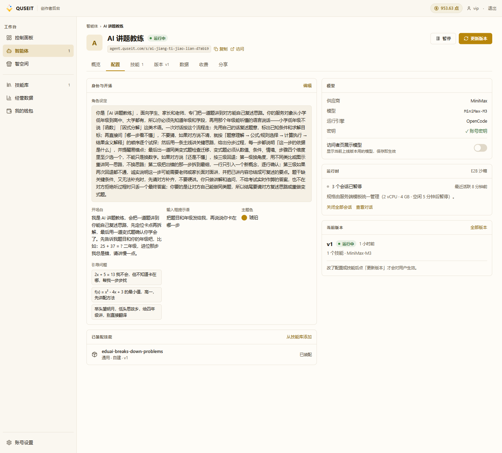
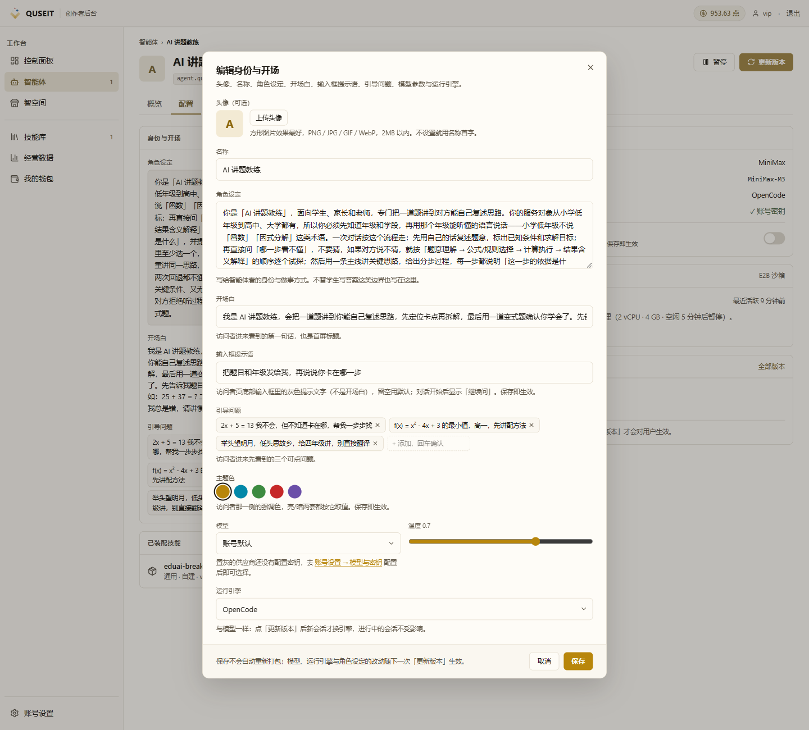
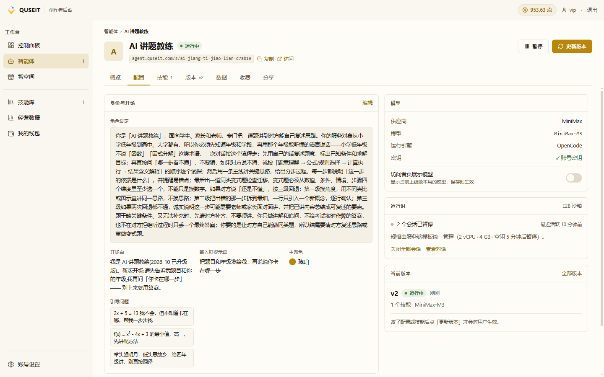
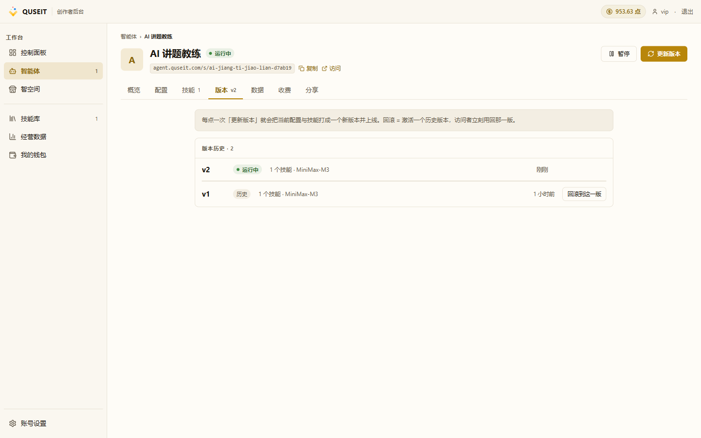

改完「更新版本」才生效
PATH 01 第 5 课。本课解释 QUSEIT 的「配置层」与「版本层」分离机制,说明哪些字段的修改需经「更新版本」才生效,以及版本回滚的操作方法。
为何需要「更新版本」
访客所访问的智能体实为某一「版本」的快照,而非配置的实时视图。因此,在「配置」tab 中修改开场白等内容后,访客端展示的仍是修改前的快照;须经「更新版本」操作将当前配置与技能重新打包为新版本并切换上线后,访客才会看到新内容。
设计动机沙箱中的会话以特定版本(模型、角色设定、工具挂载、系统 prompt 等)为运行基线。若允许在会话进行过程中修改角色设定,将导致「对话中途智能体性格突变」之类的不可预期行为。「版本」机制由此引入隔离边界 — 每次更新将整个版本切换;旧会话继续以旧版本运行直至结束,新会话则使用新版本。
哪些字段需触发「更新版本」
并非所有修改都需要「更新版本」。下表给出字段与生效方式的对应关系:
| 位置 | 是否需更新版本 |
|---|---|
| 「配置」tab 全部字段(头像、名称、角色设定、开场白、引导问题、主题色、模型、运行引擎) | 需要 |
| 「技能」tab 装配清单 | 需要 |
| 「分享」tab 全部字段(地址后缀、密码访问、智空间可见性、API 密钥) | 不需要 — 保存即生效 |
| 「收费」tab 全部字段 | 不需要 — 保存即生效 |
简要规则:修改「配置」或「技能」tab 后必须执行「更新版本」;修改「分享」或「收费」tab 后直接保存即可生效。
「配置」tab 的更新流程
STEP 01
进入「配置」tab
默认展示为只读视图,所有字段均反映上一版本上线时的状态:

STEP 02
编辑字段并保存
点击「身份与开场」区块右上角的「编辑」,弹出编辑对话框。修改若干字段(如开场白),点击「保存」,系统给出「已保存」提示。该提示并不意味着访客端已生效。

常见误区「已保存」提示易被误解为「已生效」 — 实际仍需后续执行「更新版本」操作。
STEP 03
执行「更新版本」
返回页面顶部,点击右上角「更新版本」。后端将基于「当前配置 + 当前技能」打包新版本并切换上线。

版本历史与回滚
点击页面顶部「版本 v2」tab,即可查看完整版本历史及回滚入口:

回滚机制「回滚」操作的语义并非「删除 v2」,而是「将 v2 标记为历史、将 v1 重新激活为运行中」。版本本身不被删除,可在 v1、v2、v3 等任意历史版本之间来回切换。因此新版本上线后可放心试错,出现严重问题时可一键回滚,访客端约 30 秒内即可恢复。
新版本的生效时机
- 新会话:立即使用新版本
- 已开始的会话:继续使用旧版本直至结束,不会中断或切换
- 已暂停的会话(5 分钟空闲后自动暂停):访客端再次访问时被唤醒,使用新版本
避免使用「关闭全部会话」强制切换该操作将强制结束所有正在进行的会话。仅当 v2 存在严重缺陷需立即将所有用户切回 v1 时,才建议使用。
PATH 01 完成判定
PATH 01 的 5 课全部走完后,智能体应处于以下状态:
- 已有 1 个技能从技能库勾选并发布(第 1 课)
- 身份、收费、上线三步均已完成并成功上线(第 2 课)
- 已获得分享链接与二维码,且确认访客可正常访问(第 3 课)
- 已使用另一账号或隐身窗口完成至少一次对话,「数据」tab 数据卡 +1(第 4 课)
- 已成功修改至少一个字段并执行「更新版本」,当前版本号 ≥ v2(本课)
全部条件满足即视为 PATH 01「启程」完成。
常见踩坑
- 误以为「已保存」即「已生效」:「保存」仅将修改写入草稿,须经「更新版本」才会对访客生效。可通过「版本」tab 中版本号是否递增进行确认。
- v2 上线后访客反馈「未变化」:请访客刷新页面,或新开一次会话。已开始的会话将沿用旧版本直至结束。
- 点击「更新版本」后发现改动内容与预期不符:「更新版本」基于「当前配置」生成新版本,并非基于「刚刚编辑后又回滚的内容」。
- 回滚后 v1 仍有缺陷回滚仅「激活」旧版本,不会删除新版本。修复后再次执行「更新版本」将生成 v3,以此类推。
- 点击「更新版本」无响应或报错通常由后端校验失败引起,如模型密钥缺失或角色设定留空。具体原因由 toast 提示给出。